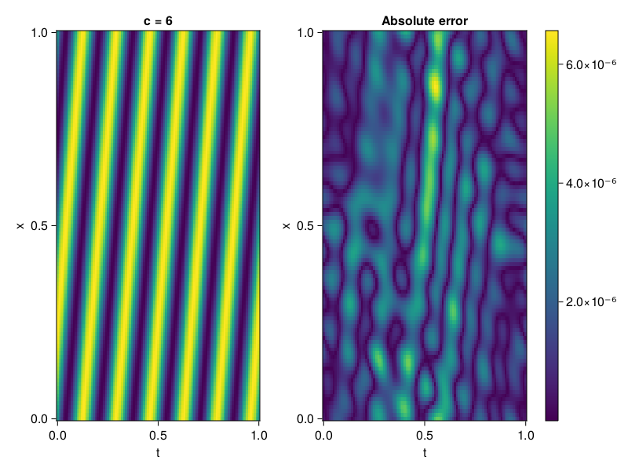
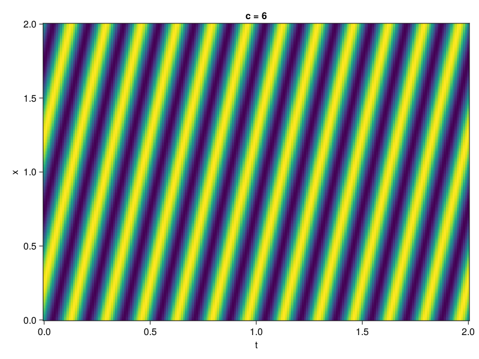

1D Convection Equation
Consider the following 1D-convection equation with periodic boundary conditions.
\[\begin{aligned} &\frac{\partial u}{\partial t}+c \frac{\partial u}{\partial x}=0, x \in[0,1], t \in[0,1] \\ &u(x, 0)=sin(2\pi x) \\ \end{aligned}\]
First we define the PDE.
using ModelingToolkit, Sophon, IntervalSets, CairoMakie
using Optimization, OptimizationOptimJL
@parameters x, t
@variables u(..)
Dₜ = Differential(t)
Dₓ = Differential(x)
c = 6
eq = Dₜ(u(x,t)) + c * Dₓ(u(x,t)) ~ 0
u_analytic(x,t) = sinpi(2*(x-c*t))
domains = [x ∈ 0..1, t ∈ 0..1]
bcs = [u(x,0) ~ u_analytic(x,0)]
@named convection = PDESystem(eq, bcs, domains, [x,t], [u(x,t)])\[ \begin{align} 6 \frac{\mathrm{d}}{\mathrm{d}x} u\left( x, t \right) + \frac{\mathrm{d}}{\mathrm{d}t} u\left( x, t \right) =& 0 \end{align} \]
Imposing periodic boundary conditions
We will use BACON to impose the boundary conditions. To this end, we simply set period to be one.
chain = BACON(2, 1, 8, 1; hidden_dims = 32, num_layers=4)MultiplicativeFilterNet(
filters = BranchLayer(
filter_1 = DiscreteFourierFeature(2 => 32), # 32 parameters, plus 64
filter_2 = DiscreteFourierFeature(2 => 32), # 32 parameters, plus 64
filter_3 = DiscreteFourierFeature(2 => 32), # 32 parameters, plus 64
filter_4 = DiscreteFourierFeature(2 => 32), # 32 parameters, plus 64
),
linear_layers = PairwiseFusion(
Base.Broadcast.BroadcastFunction{typeof(*)}(*)
layer_1 = Dense(32 => 32), # 1_056 parameters
layer_2 = Dense(32 => 32), # 1_056 parameters
layer_3 = Dense(32 => 32), # 1_056 parameters
),
output_layer = Dense(32 => 1), # 33 parameters
) # Total: 3_329 parameters,
# plus 256 states, summarysize 192 bytes.For demonstration purposes, the model is also periodic in time
sampler = QuasiRandomSampler(500, 100) # data points
strategy = NonAdaptiveTraining(1 , 500) # weights
pinn = PINN(chain)
prob = Sophon.discretize(convection, pinn, sampler, strategy)
@time res = Optimization.solve(prob, BFGS(); maxiters = 1000)u: ComponentVector{Float64}(filters = (filter_1 = (bias = [-0.765893618441189; -0.3077764097854906; … ; 0.9461402595864845; 0.6641258806584066;;]), filter_2 = (bias = [0.26013163183301985; -0.030076873905998492; … ; -0.4738207990993694; 0.8895264484467307;;]), filter_3 = (bias = [-1.0412006998431391; -0.9000781863821539; … ; -0.09597334567286302; -0.31649122524508927;;]), filter_4 = (bias = [-1.0085705969489152; -0.0625302543032643; … ; -0.06097737508255096; -0.21303723661875967;;])), linear_layers = (layer_1 = (weight = [0.2673471667314816 0.33541293360384855 … -0.34795524273132755 0.4350098484046114; 0.5186129119065923 0.20698031881596254 … -0.02381274204647717 0.5910786582675448; … ; 0.09191554418253164 0.4768385993613325 … 0.23517530761723876 -0.31028720149766453; 0.48521022224338856 0.29264177732163354 … 0.0479630605276782 0.30309836124234213], bias = [0.01614859666994685; 0.038452168579825086; … ; 0.1119395665806027; -0.06793355187894455;;]), layer_2 = (weight = [-0.21119056762800276 -0.5614643998066777 … 0.17387469921226484 0.08622760721830168; -0.038269264596839214 -0.052959332180655724 … -0.10991687679840338 0.1554388519364022; … ; -0.3261562235671171 -0.3689927940593426 … 0.23367787850784968 0.39753747967325953; -0.01344980784798515 0.04259287277669934 … 0.3524359221022795 -0.3580640461871983], bias = [-0.09309911786072464; -0.02497111005558345; … ; -9.051340668966135e-5; 0.008979942387045197;;]), layer_3 = (weight = [0.3558982343265011 -0.37342661645583786 … 0.3703137242381063 0.32253984862447; 0.3497409450052111 -0.021777573586157412 … -0.2216734775187514 0.10152507447949073; … ; -0.27397602022733636 0.28935582386799774 … 0.22526480459305592 0.2750138678174066; -0.20934494993227987 0.5998049091101105 … 0.1557141454126669 -0.3344929989570454], bias = [0.016408071788865528; -0.02519037960981713; … ; -0.025657576871262418; 0.018088407465017615;;])), output_layer = (weight = [-0.017104017449976718 -0.18311174472503627 … -0.10318702671893759 -0.4562042193209845], bias = [-0.1750560059468234;;]))Let's visualize the result.
phi = pinn.phi
xs, ts= [infimum(d.domain):0.01:supremum(d.domain) for d in domains]
u_pred = [sum(phi([x,t],res.u)) for x in xs, t in ts]
u_real = u_analytic.(xs,ts')
fig, ax, hm = heatmap(ts, xs, u_pred', axis=(xlabel="t", ylabel="x", title="c = $c"))
ax2, hm2 = heatmap(fig[1,end+1], ts,xs, abs.(u_pred' .- u_real'), axis = (xlabel="t", ylabel="x", title="Absolute error"))
Colorbar(fig[:, end+1], hm2)
display(fig)
We can verify that our model is indeed, periodic.
xs, ts= [infimum(d.domain):0.01:supremum(d.domain)*2 for d in domains]
u_pred = [sum(phi([x,t],res.u)) for x in xs, t in ts]
fig, ax, hm = heatmap(ts, xs, u_pred', axis=(xlabel="t", ylabel="x", title="c = $c"))
display(fig)